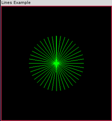
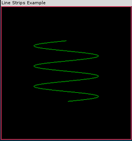
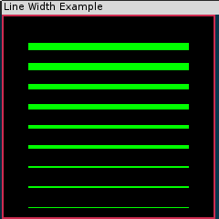

绘制线
Table of Contents
1 线
1.1 直线（GL_LINES）
下面这段简单的代码在点(0,0,0)和(50,50,50)之间画了一条直线。
glBegin(GL_LINES);
glVertex3f(0.0f, 0.0f, 0.0f);
glVertex3f(50.0f, 50.0f, 50.0f);
glEnd();
注意，这里用两个顶点指定了一个图元。每两个指定的顶点用于绘制一条直线。 如果为 GL_LINES 指定奇数个顶点，那么最后一个顶点会被忽略。 下面程序显示了LINES示例程序的代码，它显示了一个更为复杂的例子，用一系列以扇形排列的直线构成了一个圆。这个程序所指定的每个点在圆的对面都有一个对应的点。
1.1.1 画线例子
（下面的例子使用了老的管道，仅供参考）
// 对于所有剩余的点都只调用一次 glBegin(GL_LINES); // 位于 xy 平面上的所有直线 z = 0.0f; for(angle = 0.0f; angle <= GL_PI; angle += (GL_PI / 20.0f)) { // 圆的上半部分 x = 50.0f*sin(angle); y = 50.0f*cos(angle); glVertex3f(x, y, z); // 圆的下半部分 x = 50.0f*sin(angle+GL_PI); y = 50.0f*cos(angle+GL_PI); glVertex3f(x, y, z); } // 完成绘点 glEnd();
1.1.2 输出

1.2 线带（GL_LINE_STRIP）
接下来的两个OpenGL图元都建立在 GL_LINES 的基础之上，它们允许指定一个顶点列表，并根据它们绘制直线。指定 GL_LINE_STRIP 图元时，会绘制一条经过所有这些顶点的连续的线。
GL_LINE_STRIP的一个例子，
它由3个顶点所指定
| y
| | v2(50,100,0)
| |
| -+ v1(50,50,0)
| -/
|-/
-----------/-------------- x
| V0(0,0,0)
|
|
|
下面这段代码在xy平面上绘制了两条由3个顶点所指定的直线。
glBegin(GL_LINE_STRIP);
glVertex3f(0.0f, 0.0f, 0.0f); // V0
glVertex3f(50.0f, 50.0f, 0.0f); // V0
glVertex3f(50.0f, 100.0f, 0.0f);// V0
glEnd();
1.3 线环（GL_LINE_LOOP）
最后一种基于直线的图元是 GL_LINE_LOOP ，这种图元的行为与 GL_LINE_STRIP 非常相似，但此时最后一个顶点和第一个顶点之间也会绘制一条直线。这是一种非常简便的绘制闭合线形的方法。
GL_LINE_LOOP的一个例子
| y +
| /| v2(50,100,0)
| / |
| / -+ v1(50,50,0)
| /-/
|//
-----------/-------------- x
| V0(0,0,0)
|
|
|
1.4 用直线构成近似曲线
1.4.1 代码
（下面的例子使用了老的管道，仅供参考）
前面示例了使用 GL_POINTS 来绘制一条螺旋路径。绘制近似曲线的一种更好的方法是使用 GL_LINE_STRIP 连接所有的点。当点之间的距离越来越近时，我们就可以看到一条越来越平滑的曲线，这样就不必进一步指定所有的点。
// 对所有剩余的点都只调用一次 glBegin(GL_LINE_STRIP); z = -50.0f; for(angle = 0.0f; angle <= (2.0f*3.1415f)*3.0f; angle += 0.1f) { x = 50.0f*sin(angle); y = 50.0f*cos(angle); // 指定点并稍微增大z的值 glVertex3f(x, y, z); z += 0.5f; } // 完成绘点 glEnd();
1.4.2 输出

1.5 设置直线的宽度
可以使用 glLineWidth 函数指定各种不同的直线宽度。
void glLineWidth(GLfloat width);
glLineWidth函数接受一个参数，用于指定被绘制直线的近似宽度（以像素为单位）。和点大小一样，直线的宽度也是受限制的，所以要确保自己所指定的直线宽度是有效的。使用下面的代码可以获取直线宽度的有效范围以及它们之间的最小间隔值。
GLfloat sizes[2]; // 存储受支持的直线宽度范围 GLfloat step; // 存储受支持的直线宽度增量 // 获取受支持的直线宽度范围和增量 glGetFloatv(GL_LINE_WIDTH_RANGE, sizes); glGetFloatv(GL_LINE_WIDTH_GRANULARITY, &step);
这里，sizes数组将包含两个元素，分别表示 glLineWidth 的最小有效值和最大有效值。另外，step变量将保存直线宽度之间的最小允许增量。
1.5.1 代码
（下面的例子使用了老的管道，仅供参考）
// 绘制场景 void RenderScene(void) { GLfloat y; // 存储不同的y坐标 GLfloat fSizes[2]; // 线宽度范围度量 GLfloat fCurrSize; // 保存当前宽度 ... // 获取直线宽度度量并保存最小值 glGetFloatv(GL_LINE_WIDTH_RANGE,fSizes); fCurrSize = fSizes[0]; // 在y轴上每次增长20个单位距离 for(y = -90.0f; y < 90.0f; y += 20.0f) { // 设置直线宽度 glLineWidth(fCurrSize); // 绘制直线 glBegin(GL_LINES); glVertex2f(-80.0f, y); glVertex2f(80.0f, y); glEnd(); // 增加直线宽度 fCurrSize += 1.0f; } ...
1.5.2 输出

1.6 线型
除了修改直线的宽度之外，还可以用点线或虚线模式来创建直线，这称为点画（stippling）。为了使用直线点画，首先必须用下面这行代码启用点画功能1。
glEnable(GL_LINE_STIPPLE);
然后，可以用 glLineStipple 函数创建这种模式，以便进行画线。
void glLineStipple(GLint factor, GLushort pattern);
pattern 参数是一个16位的值，它指定了一个模式，供绘直线所用。它的每个位都表示线段的一部分或者处于打开状态，或者处于关闭状态。在默认情况下，每个位对应一个像素，但factor参数可以作为乘法因子增加模式的宽度。例如，把factor设置为5将导致模式中的每个位代表一行中的连续5个像素，它们同时处于打开或关闭状态。另外， 模式的第0位（最低有效位）首先被用于指定直线 2。
一个用于创建一条线段
点画模式
---0--- ---0-- ---1-- ---1--
---/ \-- ---/ \-- ---/ \-- ---/ \--
二进制模式= 0 0 0 0 0 0 0 0 1 1 1 1 1 1 1 1
--- /--
\----- /-----
\---- /-----
\----- /----
\---- /-----
\--/-----
/----- \----
/---- \----
/----- \-----
/----- \----
--- \-----
+--/+---+---+---+---+---+---+---+---+---+---+---+---+---+---+\--+
行模式= | 1 | 1 | 1 | 1 | 1 | 1 | 1 | 1 | 0 | 0 | 0 | 0 | 0 | 0 | 0 | 0 |
+---+---+---+---+---+---+---+---+---+---+---+---+---+---+---+---+
行 = --------------------------------